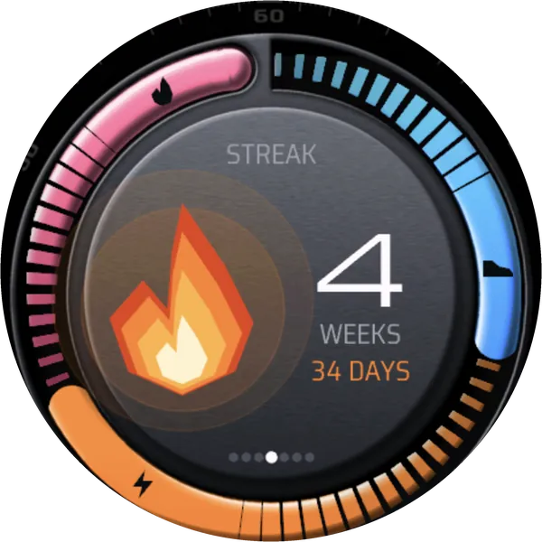

1 of 4 · Free watch face
Your journey isn't a straight line.
Steady. Your training happens over a week. One ring scored across today and the six days before it.
What it does
- One ring, seven days. Steps, active minutes and active calories fill it together, so a strong area can cover a lighter one.
- What would close it today. Three small numbers show the calories, steps or running minutes that would each do it. One is hidden when it alone cannot close the ring today, and BUILDING WEEK shows when nothing today can.
- Your level. Beginner closes at 60% of your full goals, Intermediate at 80% and Expert at 110%.
- It fits you. It uses your VO2 max and resting heart rate, can account for a draining or stressful day, and you set your own calorie target.
- A celebration when the ring closes.
- A week view. On touchscreen watches, touch and hold for your 7-day average and a bar for each day.
One real week
In a week running right on target, a day with no activity at all costs about 14 or 15 points. It doesn't empty the ring.
A very big day counts for up to 150%, today included, so it lifts the week without carrying all of it.

Who Steady is for
For anyone who wants to stay consistent without feeling scolded: people who move most days, take rest days on purpose, or got tired of a ring that only ever shouts. It is built to be your biggest fan, not your critic.
See it in motion
Steady Widget
Love the ring but keep your own watch face? The Steady Widget puts your 7-day average in the glance loop. Open it to see your week, your streak, your best days and your level.




7-day average
Real screens from the Connect IQ simulator on a fenix 8 47mm.
Get it
Steady is free on Connect IQ. Prefer your own face? Steady Widget puts the 7-day ring in your glance loop for $1.99.
Questions about Steady
How is Steady different from a normal activity ring?
A normal ring resets every midnight. Steady looks at your whole week, so yesterday still counts, and a big day counts up to 150%, so it lifts your whole week.
Can I make the ring easier to close?
Yes. Pick a Level so nobody gets left behind. Beginner closes the ring at 60% of your full goals, Intermediate at 80% (the default) and Expert at 110%. You can change it on the watch or in the Garmin Connect IQ phone app.
Price and watches
- Price
- Free on the Connect IQ Store.
- Works on
- Round AMOLED and color-screen Garmin watches: fenix 7/8/9 and fenix E, epix 2, Forerunner 70/165/170/255/265/570/955/965/970, Venu 3/4, vivoactive 5/6, Enduro 3/4, MARQ 2/3, D2 Mach 1/2, Approach S70, Instinct 3 AMOLED.
- Help
- Steady setup guide